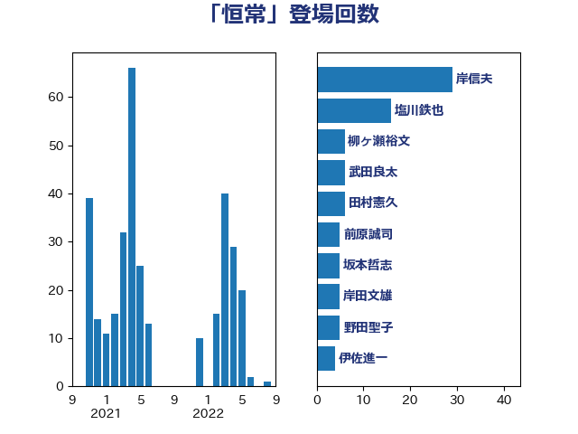

単語「恒常」

| 岸信夫 | 自由民主党 | 29 回 |
| 塩川鉄也 | 日本共産党 | 16 回 |
| 柳ヶ瀬裕文 | 日本維新の会 | 6 回 |
| 武田良太 | 自由民主党 | 6 回 |
| 田村憲久 | 自由民主党 | 6 回 |
| 前原誠司 | 国民民主党 | 5 回 |
| 坂本哲志 | 自由民主党 | 5 回 |
| 岸田文雄 | 自由民主党 | 5 回 |
| 野田聖子 | 自由民主党 | 5 回 |
| 伊佐進一 | 公明党 | 4 回 |
| 伊波洋一 | 無所属 | 4 回 |
| 櫻井周 | 立憲民主党 | 4 回 |
| 田村智子 | 日本共産党 | 4 回 |
| 下野六太 | 公明党 | 3 回 |
| 井上信治 | 自由民主党 | 3 回 |
| 伊藤岳 | 日本共産党 | 3 回 |
| 城井崇 | 立憲民主党 | 3 回 |
| 山添拓 | 日本共産党 | 3 回 |
| 本村伸子 | 日本共産党 | 3 回 |
| 舟山康江 | 国民民主党 | 3 回 |
| 茂木敏充 | 自由民主党 | 3 回 |
| 倉林明子 | 日本共産党 | 2 回 |
| 古賀友一郎 | 自由民主党 | 2 回 |
| 宮路拓馬 | 自由民主党 | 2 回 |
| 寺田学 | 立憲民主党 | 2 回 |
| 後藤祐一 | 立憲民主党 | 2 回 |
| 後藤茂之 | 自由民主党 | 2 回 |
| 柴田巧 | 日本維新の会 | 2 回 |
| 熊谷裕人 | 立憲民主党 | 2 回 |
| 牧山ひろえ | 立憲民主党 | 2 回 |
| 田畑裕明 | 自由民主党 | 2 回 |
| 若宮健嗣 | 自由民主党 | 2 回 |
| 萩生田光一 | 自由民主党 | 2 回 |
| 西銘恒三郎 | 自由民主党 | 2 回 |
| 高橋光男 | 公明党 | 2 回 |
| 高橋千鶴子 | 日本共産党 | 2 回 |
| こやり隆史 | 自由民主党 | 1 回 |
| 中川正春 | 立憲民主党 | 1 回 |
| 五十嵐清 | 自由民主党 | 1 回 |
| 井上哲士 | 日本共産党 | 1 回 |
| 井原巧 | 自由民主党 | 1 回 |
| 伊藤孝恵 | 国民民主党 | 1 回 |
| 伊藤渉 | 公明党 | 1 回 |
| 加田裕之 | 自由民主党 | 1 回 |
| 古川元久 | 国民民主党 | 1 回 |
| 吉川元 | 立憲民主党 | 1 回 |
| 吉田とも代 | 日本維新の会 | 1 回 |
| 吉田久美子 | 公明党 | 1 回 |
| 吉田忠智 | 立憲民主党 | 1 回 |
| 塩村あやか | 立憲民主党 | 1 回 |
| 大串博志 | 立憲民主党 | 1 回 |
| 大西健介 | 立憲民主党 | 1 回 |
| 宮本岳志 | 日本共産党 | 1 回 |
| 小山展弘 | 立憲民主党 | 1 回 |
| 小沢雅仁 | 立憲民主党 | 1 回 |
| 小里泰弘 | 自由民主党 | 1 回 |
| 山口壯 | 自由民主党 | 1 回 |
| 山崎誠 | 立憲民主党 | 1 回 |
| 山田賢司 | 自由民主党 | 1 回 |
| 岡本あき子 | 立憲民主党 | 1 回 |
| 岩渕友 | 日本共産党 | 1 回 |
| 岸真紀子 | 立憲民主党 | 1 回 |
| 打越さく良 | 立憲民主党 | 1 回 |
| 有村治子 | 自由民主党 | 1 回 |
| 末松信介 | 自由民主党 | 1 回 |
| 本庄知史 | 立憲民主党 | 1 回 |
| 杉久武 | 公明党 | 1 回 |
| 松本尚 | 自由民主党 | 1 回 |
| 松野博一 | 自由民主党 | 1 回 |
| 枝野幸男 | 立憲民主党 | 1 回 |
| 森本真治 | 立憲民主党 | 1 回 |
| 武井俊輔 | 自由民主党 | 1 回 |
| 武部新 | 自由民主党 | 1 回 |
| 沢田良 | 日本維新の会 | 1 回 |
| 浅野哲 | 国民民主党 | 1 回 |
| 渡辺創 | 立憲民主党 | 1 回 |
| 湯原俊二 | 立憲民主党 | 1 回 |
| 熊田裕通 | 自由民主党 | 1 回 |
| 牧原秀樹 | 自由民主党 | 1 回 |
| 玄葉光一郎 | 立憲民主党 | 1 回 |
| 田中健 | 国民民主党 | 1 回 |
| 田名部匡代 | 立憲民主党 | 1 回 |
| 田村貴昭 | 日本共産党 | 1 回 |
| 石垣のりこ | 立憲民主党 | 1 回 |
| 石川香織 | 立憲民主党 | 1 回 |
| 神谷裕 | 立憲民主党 | 1 回 |
| 美延映夫 | 日本維新の会 | 1 回 |
| 菅義偉 | 自由民主党 | 1 回 |
| 赤嶺政賢 | 日本共産党 | 1 回 |
| 赤羽一嘉 | 公明党 | 1 回 |
| 足立康史 | 日本維新の会 | 1 回 |
| 近藤和也 | 立憲民主党 | 1 回 |
| 逢坂誠二 | 立憲民主党 | 1 回 |
| 阿部知子 | 立憲民主党 | 1 回 |
| 階猛 | 立憲民主党 | 1 回 |
| 青山大人 | 立憲民主党 | 1 回 |
| 音喜多駿 | 日本維新の会 | 1 回 |
| 高階恵美子 | 自由民主党 | 1 回 |